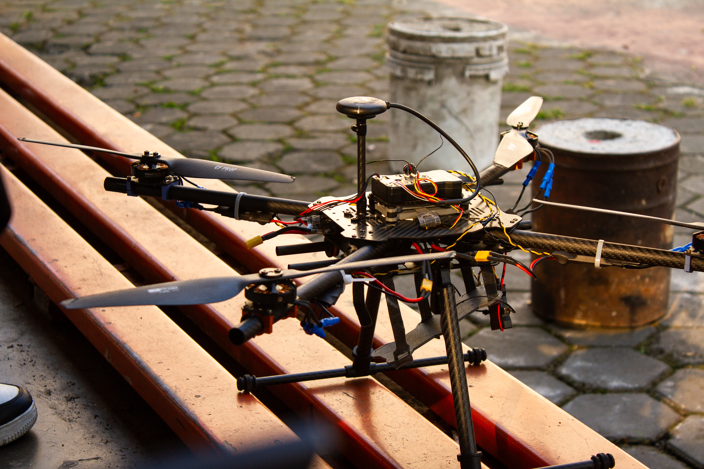
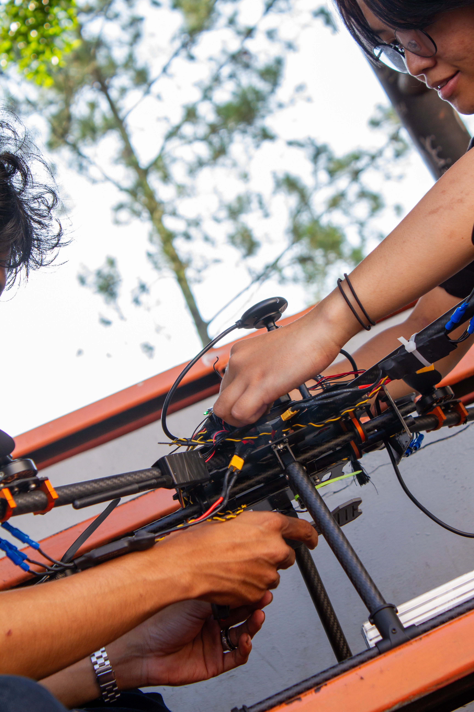

What We Do in KRTI
Our VTOL drone completes 5 mission phases, from manual navigation through autonomous delivery and precision landing.

About AERO-GUARD
Our autonomous VTOL drone is powered by Pixhawk flight controller and NVIDIA Jetson Nano for visual navigation. Equipped with dual ArduCam cameras, GPS M10, collision avoidance sensors, and a custom gripper mechanism for precise First Aid Kit delivery.
Manual Navigation
Gate 1 & 2 → WP1
Autonomous Double Gate
WP1 → WP2 + Med Kit Drop
Triple Gate Navigation
WP2 → WP4 (2m corridor)
Black Line Tracking
WP4 → WP5 via markers
Final Gate & Landing
Autonomous precision landing

Our Divisions
27+ dedicated members across 5 departments collaborate on building, programming, and flying our autonomous drone system.

About AERO-GUARD
Autonomous VTOL drone powered by Pixhawk and Jetson Nano for visual navigation, equipped with dual cameras and a custom gripper.

Our Divisions
27+ members across 5 departments: Software, Mechanics, Electronics, Product Design, and Visual Design.
Mission Phases
Mission 1: Manual Navigation
Navigate manually through Gate 1 and Gate 2 to reach WP1. Transition from manual to autonomous mode at this checkpoint.
Mission 2: Autonomous Double Gate + Med Kit Drop
Autonomously traverse the 1-meter Double Gate corridor from WP1 to WP2. Identify the red target zone and release the First Aid Kit.
Mission 3: Triple Gate Navigation
Navigate through the 2-meter Triple Gate corridor using collision avoidance sensors and ArUco marker detection for position correction at WP4.
Mission 4: Black Line Tracking
Track the dashed black line on the field surface using the downward-facing camera, navigating from WP4 to WP5.
Mission 5: Final Gate & Autonomous Landing
Pass through the final Single Gate and execute a precision autonomous landing on the designated landing pad.